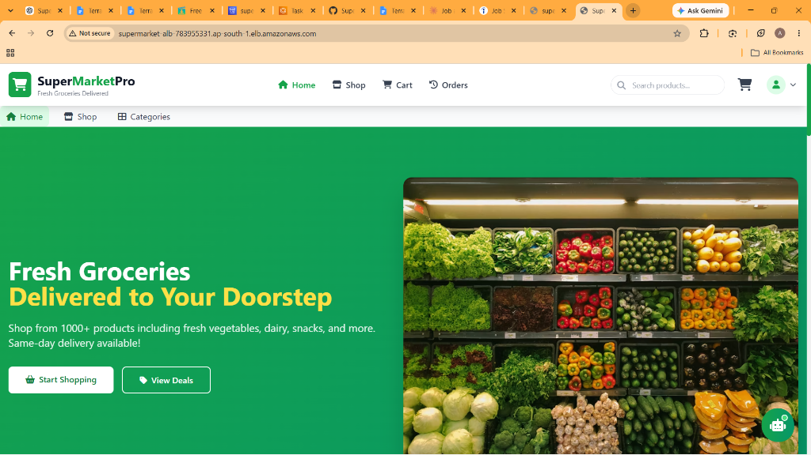
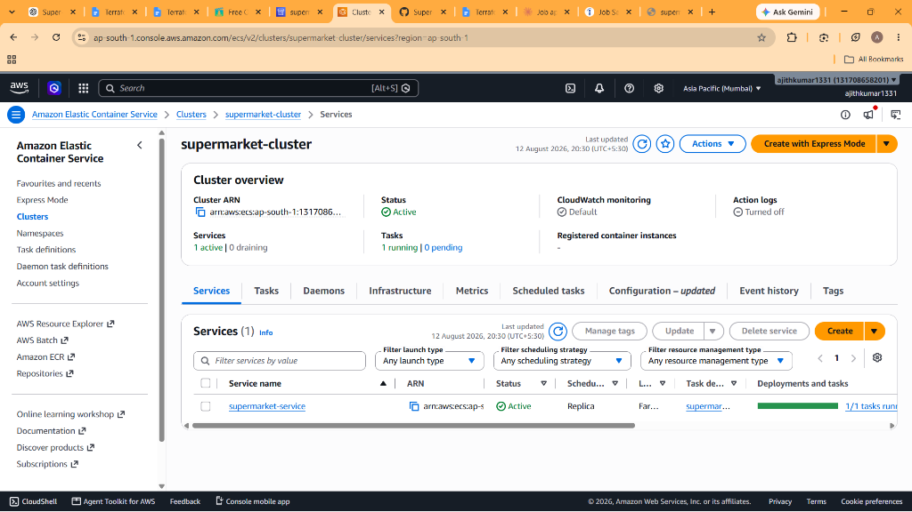
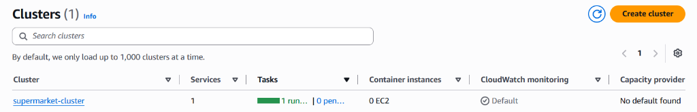

📌 Project Overview
How changes seamlessly progress from a local Git commit to live production.
SuperMarketPRO is a full-stack grocery e-commerce application deployed on AWS EC2 using Docker, with an automated CI/CD pipeline using GitHub Actions.
The project demonstrates how source-code changes automatically go through:
The deployment also includes automatic rollback when the newly deployed application fails its health check.
🏗️ Architecture Diagram
Complete end-to-end pipeline flow and AWS runtime environment.
1. Developer
Write Code
git push
2. GitHub
Source Code
4. CD / Deployment — AWS EC2
AWS EC2
Ubuntu Server
Docker
supermarket-app
:5000
5. Nginx Reverse Proxy
server_name
supermarketpro.crabdance.com
6. Custom Domain
DNS A Record
43.204.148.225
7. Internet Users
Access Application
https://supermarketpro.crabdance.com
🛠️ Technology Stack
Tools and services categorized across each layer of the solution.
Application
- HTML
- CSS
- JavaScript
- Node.js
- Express.js
- MySQL / AWS RDS
- DynamoDB
- AWS S3
- AWS Lambda
- AWS SNS
DevOps
- Git
- GitHub
- GitHub Actions
- Docker
- Nginx
- SonarQube
- Trivy
Cloud
- AWS EC2
- AWS RDS
- AWS DynamoDB
- AWS S3
- AWS Lambda
- AWS SNS
- IAM
Networking
- DNS
- HTTP
- Nginx Reverse Proxy
- EC2 Security Groups
- Custom Domain
🔄 CI Pipeline
Automated build and code inspection whenever code is pushed to main.
SonarQube Inspection
SonarQube is used to check:
- Code quality
- Bugs
- Code smells
- Security issues
- Maintainability
🔐 Container Security (Trivy)
The pipeline uses Trivy to scan the Docker image, preventing deployment when serious vulnerabilities are detected:
🚀 Continuous Deployment
Automated release to AWS EC2 with full Git commit traceability.
After CI succeeds:
The application is deployed as:
supermarket-app:<GitHub-Commit-SHA>
For example:
supermarket-app:b886427efa556df9484c14bb02980e903d626dea
This provides complete traceability between a running deployment and the exact Git commit.
🔄 Automatic Rollback
Automated self-healing recovery when a release fails validation.
One of the strongest features of the project is the rollback mechanism. After deployment, the pipeline validates:
If Successful:
If Health Check Fails:
🐳 Docker Deployment & 🌐 Nginx Reverse Proxy
Container runtime topology and ingress traffic routing.
Docker Containerization
Current Container: supermarket-app | Status: Up (healthy) | Port: 5000
Health Endpoint: /health
Nginx Reverse Proxy
Users seamlessly access http://supermarketpro.crabdance.com instead of exposing port 5000 publicly.
🌍 DNS & ☁️ AWS Architecture
Public domain validation and connected AWS cloud backend services.
Public DNS Resolution
Type: A Record | Host: supermarketpro.crabdance.com → 43.204.148.225
Domain is fully and publicly resolvable.
AWS Cloud Services
Demonstrates real-world cloud engineering experience beyond single-container deployments.
Evidence & Output
Screenshots documenting the application output, pipeline, and AWS runtime environment.




📊 DevOps Skills Demonstrated
Core capabilities showcased throughout this deployment.
Linux
- Ubuntu
- SSH
- systemctl
- networking commands
- process management
- Nginx configuration
Git
- Git workflow
- GitHub repository
- branches & commits
- automated deployment triggers
Docker
- Dockerfile
- Docker image
- Docker container
- container health checks
- image tagging & rollback
CI/CD & DevSecOps
- GitHub Actions
- CI / CD pipeline
- automated rollback
- SonarQube Quality Gate
- Trivy vulnerability scanning
📄 Resume & 💼 LinkedIn Project Descriptions
Click below to copy ready-to-use text for your profile and applications.
SuperMarketPRO — End-to-End CI/CD & AWS Deployment Developed and containerized a full-stack grocery e-commerce application using Node.js, Express.js, HTML, CSS and JavaScript. Built an automated CI/CD pipeline with GitHub Actions, including dependency installation, syntax validation, SonarQube code-quality analysis and Trivy Docker vulnerability scanning. Deployed the application on AWS EC2 using Docker, with Nginx configured as a reverse proxy for public access through a custom DNS domain. Implemented automated deployment with health checks and Docker image rollback, enabling recovery when a new release fails validation. Integrated AWS services including RDS, DynamoDB, S3, Lambda and SNS for backend functionality. Achieved a passed SonarQube Quality Gate and implemented container security scanning as part of the deployment pipeline.
🚀 Completed an End-to-End CI/CD & DevSecOps Project — SuperMarketPRO I recently completed a real-world deployment project where I implemented an automated CI/CD pipeline for a full-stack grocery application. 🔹 GitHub → source control 🔹 GitHub Actions → CI/CD automation 🔹 SonarQube → code quality analysis 🔹 Trivy → Docker vulnerability scanning 🔹 Docker → application containerization 🔹 AWS EC2 → application hosting 🔹 Nginx → reverse proxy 🔹 DNS → custom domain 🔹 AWS RDS / DynamoDB / S3 / Lambda / SNS → cloud services The pipeline automatically builds, scans and deploys the application whenever changes are pushed to the main branch. I also implemented health checks and automatic Docker rollback, allowing the system to restore the previous working version when a deployment fails. 🌐 Live Demo: http://supermarketpro.crabdance.com This project helped me gain hands-on experience with AWS, Linux, Docker, GitHub Actions, CI/CD, DevSecOps, Nginx, DNS and production-style deployment practices. #AWS #DevOps #Docker #GitHubActions #CICD #DevSecOps #SonarQube #Trivy #Linux #Nginx #CloudComputing #AWSCloud
⭐ What You Should Do Next
To advance this deployment from HTTP to an enterprise-grade secure domain:
Next enhancements include AWS CloudWatch log streaming, centralized metrics monitoring, and automated container alarms.